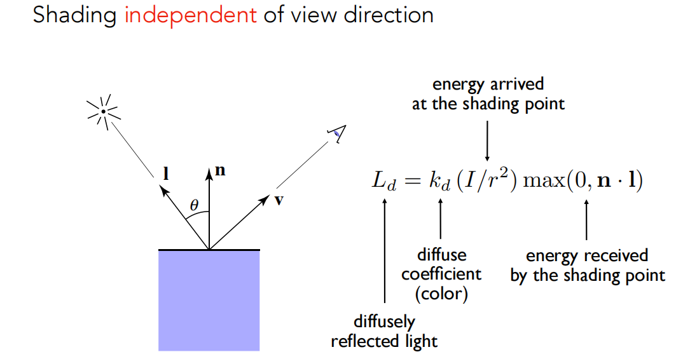
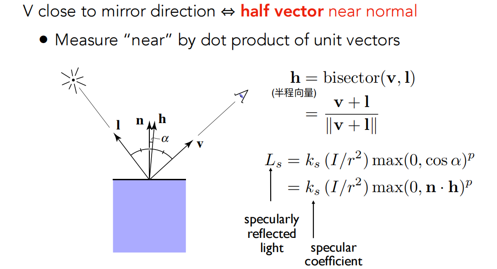
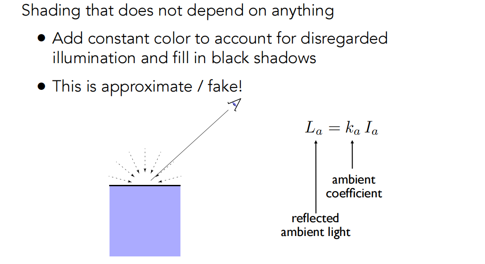
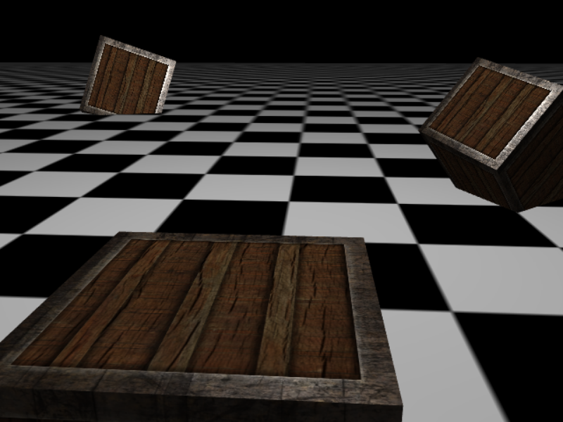
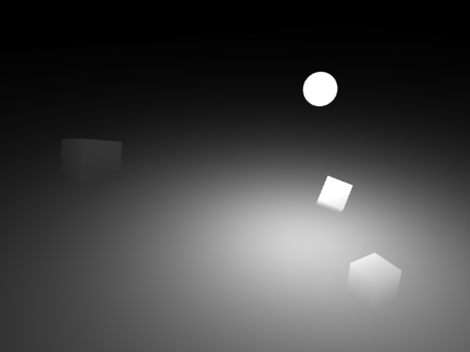
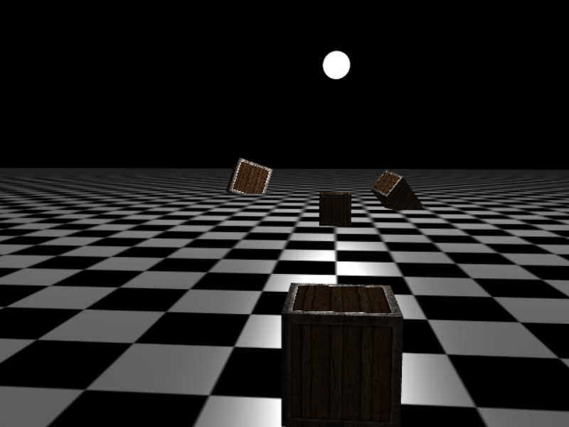
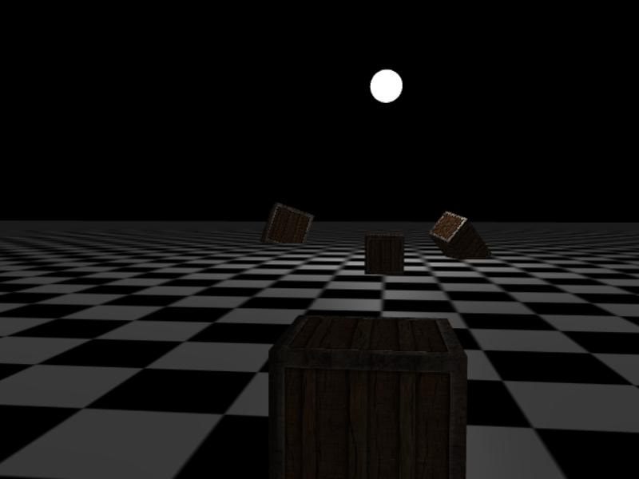
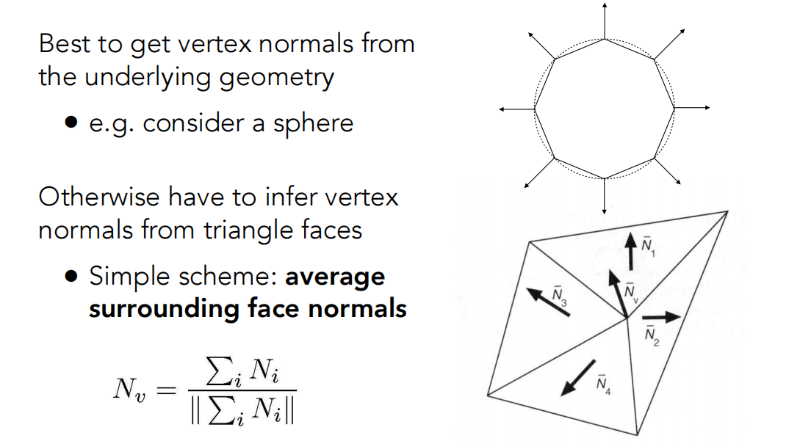

# Blinn-Phong Reflectance Model
Blinn-Phong 着色模型分为三部分：环境光照、漫反射、镜面反射。
对于一个 shading point，需要的输入有相机相对这一点的方向 v 、光源相对这一点的方向 l 、这一点的法线方向 n ，还有一系列顶点自身属性数据（也就是之前说的表面纹理）。三个向量都是单位向量。
# Diffuse 漫反射
要注意漫反射和相机方向无关。

片段着色器：
// diffuse | |
float diff = max(dot(norm, lightDir), 0.0); | |
vec3 diffuse = uLight.diffuse * diff * texDiffuse; |
# Specular 镜面反射 or 高光

计算镜面反射的比较直接的方法是先计算 l 关于 n 反射的向量 l1 ，然后使用 l1 和 v 点乘的结果。一个优化是使用 l 和 v 的半程向量 h ，使用 h 和 n 的点乘结果。使用反射向量的方法被称为 Phong 模型，使用半程向量的方法被称为 Blinn-Phong 模型。两种模型唯一的区别就是产生的高光效果不一样，Bling-Phong 产生的高光更加柔和。
片段着色器分别可以像下面这样写：
// specular Phong | |
vec3 reflectDir = reflect(-lightDir, norm); | |
float spec = pow(max(dot(viewDir, reflectDir), 0.0), uMaterial.shininess); | |
vec3 specular = uLight.specular * spec * texSpecular; |
// specular Blinn-Phong | |
vec3 halfDir = normalize(viewDir + lightDir); | |
float spec = pow(max(dot(norm, halfDir), 0.0), uMaterial.shininess); | |
vec3 specular = uLight.specular * spec * texSpecular; |
# 环境光照
环境光照是一个常量。

片段着色器中直接计算即可。
// ambient | |
vec3 ambient = uLight.ambient * texDiffuse; |
# WebGL 实现
细心和聪明的朋友可能会法线上面的代码和图片说明是有出入的，代码主要参考自 Learn OpenGL。我试了一下，感觉光照强度非常难把握，一不小心就会全黑或者全白，可以尝试 gl_FragColor = vec4(vec3(uLight.intensity / radius2), 1.0); 打印出来看看是不是适合再确定 intensity。




下方点击后，鼠标控制相机方向，wasd 空格 shift 控制相机移动。
考虑光照强度衰减之后，顶点着色器和片段着色器全部代码如下：
uniform mat4 uModelMatrix; | |
uniform mat4 uViewMatrix; | |
uniform mat4 uProjectionMatrix; | |
uniform mat4 uNormalMatrix; | |
attribute vec3 aVertexPosition; | |
attribute vec3 aVertexNormal; | |
attribute vec2 aTextureCoord; | |
varying vec3 vFragPosition; | |
varying vec3 vFragNormal; | |
varying vec2 vTextureCoord; | |
void main(void) { | |
// varying and gl_Position | |
vFragPosition = vec3(uModelMatrix * vec4(aVertexPosition, 1.0)); // or just modelMatrix? | |
vFragNormal = vec3(uNormalMatrix * vec4(aVertexNormal, 1.0)); | |
vTextureCoord = aTextureCoord; | |
gl_Position = uProjectionMatrix * uViewMatrix * uModelMatrix * vec4(aVertexPosition, 1.0); | |
} |
precision highp float; | |
struct Material { | |
sampler2D diffuse; | |
sampler2D specular; | |
float shininess; | |
}; | |
struct Light { | |
vec3 position; | |
vec3 intensity; | |
vec3 ambient; | |
vec3 diffuse; | |
vec3 specular; | |
}; | |
varying vec3 vFragPosition; | |
varying vec3 vFragNormal; | |
varying vec2 vTextureCoord; | |
uniform vec3 uViewPosition; | |
uniform Material uMaterial; | |
uniform Light uLight; | |
void main(void) { | |
vec3 texDiffuse = texture2D(uMaterial.diffuse, vTextureCoord).rgb; | |
vec3 texSpecular = texture2D(uMaterial.specular, vTextureCoord).rgb; | |
vec3 norm = normalize(vFragNormal); | |
vec3 lightDir = normalize(uLight.position - vFragPosition); | |
vec3 viewDir = normalize(uViewPosition - vFragPosition); | |
vec3 temp = uLight.position - vFragPosition; | |
float radius2 = dot(temp, temp); // equals to pow(sqrt(temp, temp), 2) | |
// ambient | |
vec3 ambient = uLight.ambient * texDiffuse; | |
// diffuse | |
float diff = max(dot(norm, lightDir), 0.0); | |
// vec3 diffuse = uLight.diffuse * diff * texDiffuse; | |
vec3 diffuse = (uLight.intensity / radius2) * uLight.diffuse * diff * texDiffuse; | |
// specular | |
// vec3 reflectDir = reflect(-lightDir, norm); | |
// float spec = pow(max(dot(viewDir, reflectDir), 0.0), uMaterial.shininess); | |
vec3 halfDir = normalize(viewDir + lightDir); | |
float spec = pow(max(dot(norm, halfDir), 0.0), uMaterial.shininess); | |
// vec3 specular = uLight.specular * spec * texSpecular; | |
vec3 specular = (uLight.intensity / radius2) * uLight.specular * spec * texSpecular; | |
vec3 result = ambient + diffuse + specular; | |
gl_FragColor = vec4(result, 1.0); | |
// gl_FragColor = vec4(vec3(uLight.intensity / radius2), 1.0); | |
} |
实现时有几个小细节：
Blinn-Phong 模型的效率比 Phong 模型好些。
法向量只是一个方向向量，位移不应该影响法向量。因此，如果我们打算把法向量乘以一个模型矩阵，我们就要从矩阵中移除位移部分，只选用模型矩阵左上角 3×3 的矩阵。对于法向量，我们只希望对它实施缩放和旋转变换
如果模型矩阵执行了不等比缩放，顶点的改变会导致法向量不再垂直于表面了。因此，我们不能用这样的模型矩阵来变换法向量。修复这个行为的诀窍是使用一个为法向量专门定制的模型矩阵。这个矩阵称之为法线矩阵。法线矩阵被定义为「模型矩阵左上角的逆矩阵的转置矩阵」。—— LearnOpenGL 基础光照
即使是对于着色器来说，逆矩阵也是一个开销比较大的运算，因此，只要可能就应该避免在着色器中进行逆矩阵运算，它们必须为你场景中的每个顶点都进行这样的处理。用作学习目这样做是可以的，但是对于一个对效率有要求的应用来说，在绘制之前你最好用 CPU 计算出法线矩阵，然后通过 uniform 把值传递给着色器（像模型矩阵一样）。—— LearnOpenGL 基础光照
在世界空间进行光照计算和在观察空间进行光照计算。在世界空间进行光照计算更加符合直觉，在观察空间进行光照计算可以直接知道观察点就是原点。LearnOpenGL 中是在世界空间进行的，MDN 的教程是在观察空间中进行的。
# Shading Frequencies 着色频率
着色频率是指对哪些部分应用同一个着色。一般来说有三种：
- Flat Shading：对一个平面 or 三角应用一个着色，也就是说法向量是三角形的法向量。
- Grouraud Shading：对一个顶点应用一个着色。
- Phong Shading：对每个像素应用一个着色。
顶点法向量的计算方法：

对于顶点：最好是从图形上看出来，不行的话就从相邻的三角形面的法向量平均一下，也可以考虑相邻三角形的面积进行一个带权平均。
对于一个像素的法线：使用相对于顶点的重心坐标做插值。
不要忘了法线是单位向量，要归一化。
参考资料：
GAMES101
LearnOpenGL 基础光照
MDN tutorial Lighting in WebGL